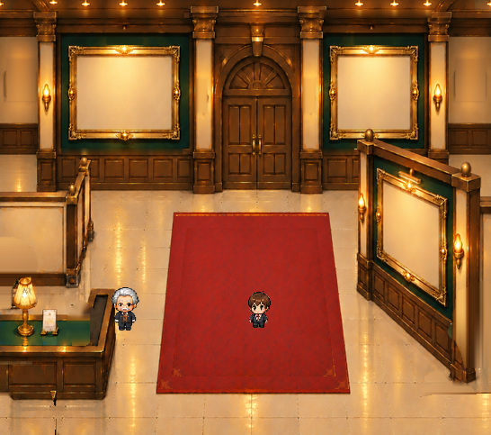
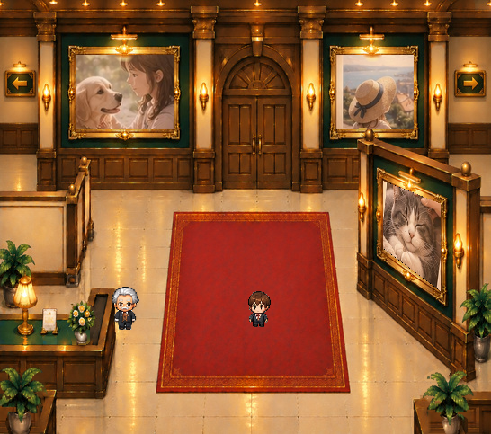

まずA案を確認


何を残して、何を外したか
背面の2枠と右手前1枠は、写真を外した空き枠にしました。植物・受付の花・木製台座・追加の金ライン・額縁上の追加灯・案内板を外しています。焼き込まれていた壁際の植物2か所も背景修復しました。
北扉・通路・受付カウンター・空の額縁・赤い絨毯と、正式キャラクター2人は残しています。
注意：原画にもともとある額縁の金色、木製柱の意匠、卓上ランプや建築照明までは削除していません。見えなかった左壁・右壁の一部は原本の周辺材質から補修した比較用画像で、原画の完全復元ではありません。
並べて比較

